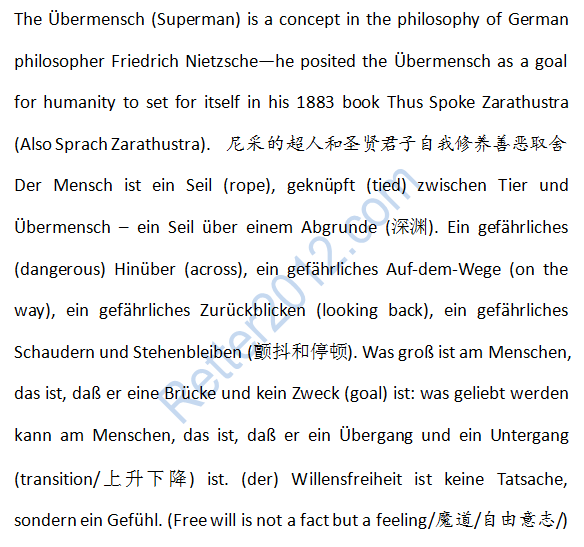

返回主页
君子和超人（魔/道）

一生中只追求完美
名言佳句（亚里士多德）
诗：Natur und Kunst （von Goethe）
生老病死，自然规律。美国若不能成为尼采所谓的超人，也必有衰败的时候。
爱（Was du liebst, lass frei）
2014：奥巴马西点演讲
战舰美利坚号
In Hogwarts
Dumbledore: I sense that something is troubling you. Am I right, Harry?
Harry: It's just...you see, sir, I couldn't help but notice certain things, certain....certain similarities between Tom Riddle and me.
Dumbledore: I see. Well, you can speak Parseltongue, Harry. Why? Because Lord Voldemort can speak Parseltongue. If I'm not mistaken, Harry...he transferred some of his powers to you......the night he gave you that scar.
Harry: Voldemort transferred some of his powers to me?
Dumbledore: Not intentionally...but yes.
Harry: So the Sorting Hat was right. I should be in Slytherin.
Dumbledore: It's true. You possess many of the qualities that Voldemort himself prizes. Determination, resourcefulness......and if I may say so, a certain disregard for the rules. Why, then, did the Sorting Hat place you in Gryffindor?
Harry: Because I asked it to.
Dumbledore: Exactly, Harry, exactly, which makes you different from Voldemort. It is not our abilities that show what we truly are. It is our choices.
文摘（战争和航海）
version:1.0; jobnet@188.com © retter2012.com